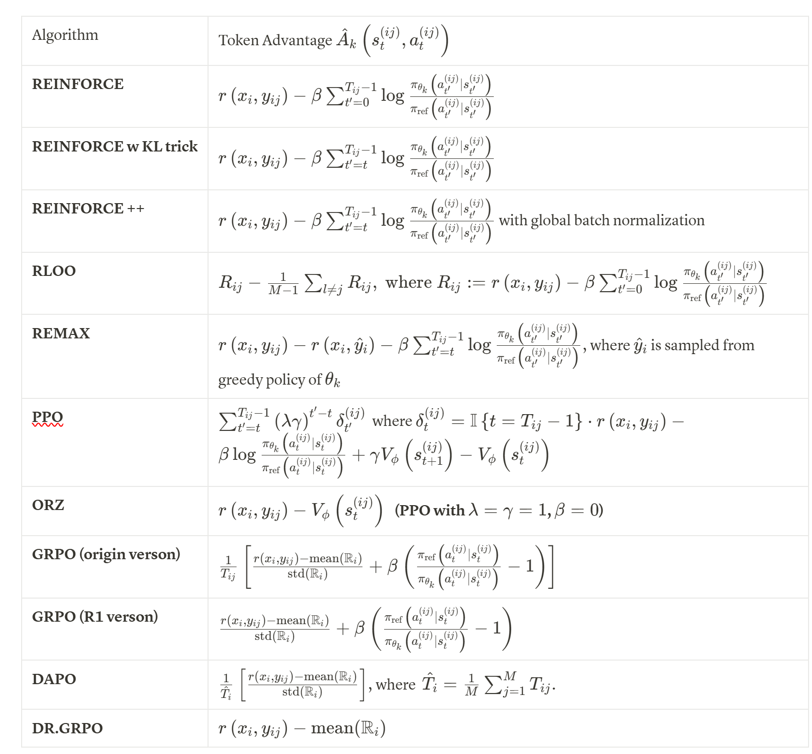

RL4LLM笔记
跟着知乎学习一下当前RL是如何用于LLM的
参考
https://zhuanlan.zhihu.com/p/1891822525274637445
类比强化学习的概念，LLM的next-token prediction范式的policy \(\pi(a|s)\) 即
\[
\pi(\hat{y}| \hat{x}) = \prod_{t=0}^{T - 1} \pi(\hat{y}_t | (\hat{x}, \hat{y}_{<t}))\]
这里\(\hat{x}\) 是文本前缀，\(\hat{y}\) 是token序列.
我们希望求解的优化问题表示为,
\[
\max_{\pi} \{ \mathcal{J}(\pi) := \mathbb{E}_{x \sim \mathcal{D}}\left[\mathbb{E}_{y \sim \pi_{x}} [r(x, y) - \beta \,\text{KL}(\pi_x, \pi_x^{ref})]\right]\}
\]
这里\(x\) 是prompt， \(y\) 是输出的token序列，\(\pi_{x}^{ref}\) 为参考策略，通常是原模型本身.
\(\pi_{\theta}\)是神经网络参数化的，求一下梯度
\[
\nabla_{\theta} \mathcal{J}(\theta) = \mathbb{E}_{x \sim \mathcal{D}} \mathbb{E}_{y \sim \pi_{\theta}(\cdot | x)} \left[\left(
r(x, y) - \beta \log \frac{\pi_{\theta}(y|x)}{\pi_{ref}(y|x)}\right)\nabla_{\theta}\log\pi_{\theta}(y | x)\right]
\]
注意到\(y = (a_0, \dots, a_{T-1})\), 并定义\(s_t := (x, a_0, \dots, a_{t-1})\), 带入就得到
\[
\nabla_{\theta} \mathcal{J}(\theta) = \mathbb{E}_{x \sim \mathcal{D}} \mathbb{E}_{y \sim \pi_{\theta}(\cdot | x)} \left[
\sum_{t=0}^{T-1} \nabla_{\theta} \log{\pi_{\theta} (a_t | s_t)}
\left(
r(x, y) - \beta \sum_{t^{\prime} = 0}^{T - 1}\log \frac{\pi_{\theta}(a_{t^{\prime}}| s_{t^{\prime}})}{\pi_{ref}(a_{t^{\prime}}| s_{t^{\prime}})}
\right)
\right]
\]
为了使BP能够成立(数据采样所用参数不能作为优化对象)，我们用以下替代函数作为损失函数，可以证明不改变梯度值
\[
\mathcal{L}_{k} (\theta)
= - \mathbb{E}_{x \sim \mathcal{D}} \mathbb{E}_{y \sim \pi_{\theta_k}(\cdot | x)} \left[
\sum_{t=0}^{T-1}
\frac{\pi_{\theta}(a_t | s_t)}{\pi_{\theta_k}(a_t|s_t)}
\left(
r(x, y) - \beta \sum_{t^{\prime} = 0}^{T - 1}\log \frac{\pi_{\theta_k}(a_{t^{\prime}}| s_{t^{\prime}})}{\pi_{ref}(a_{t^{\prime}}| s_{t^{\prime}})}
\right)
\right]
\]
估计策略梯度
考虑直接Monte-Carlo估计(称为REINFORCE) ，多次采样prompt序列并对应生成多个轨迹,但是这样会有巨大的方差，尤其是KL散度那里.
一个trick是对于固定的\(t\)，我们只用从\(t\)开始到最后的KL惩罚.
我们继续引入RL的概念
对于LLM我们认为状态值函数是补全响应的累计期望奖励
\[
V^{\pi_{\theta}}(s) = \mathbb{E}_{y \sim \pi_{\theta}(\cdot | s)
}
\left[
r(s, y)
\right]
\]
而状态-动作值函数是对于给定token的期望
\[
Q^{\pi_{\theta}}(s, a) = \mathbb{E}_{y \sim \pi_{\theta}(\cdot | (s, a) )
}
\left[
r((s, a), y)
\right]
\]
\(x\) 给定以后step t某状态动作对的奖励的期望可以用\(Q\) 表示
\[
\mathbb{E}_{y \sim \pi_{\theta}(\cdot | x)}
\left[ r(x, y) | s_t, a_t\right]
= Q^{\pi_{\theta}} (s_t, a_t)
\]
带入可得
\[
\nabla_{\theta} \mathcal{J}(\theta) = \mathbb{E}_{x \sim \mathcal{D}} \mathbb{E}_{y \sim \pi_{\theta}(\cdot | x)} \left[
\sum_{t=0}^{T-1} \nabla_{\theta} \log{\pi_{\theta} (a_t | s_t)}
\left(
Q^{\pi_{\theta}}(s_t, a_t) - \beta \sum_{t^{\prime} = 0}^{T - 1}\log \frac{\pi_{\theta}(a_{t^{\prime}}| s_{t^{\prime}})}{\pi_{ref}(a_{t^{\prime}}| s_{t^{\prime}})}\right)\right]
\]
训练Critic估计值函数，可以减少奖励的方差问题.
这里我们还可以进一步引入优势函数\(A^{\pi_\theta}(s, a) = Q^{\pi_{\theta}}(s_t, a_t) - V^{\pi_{\theta}}(s_t)\)
为了统一各种算法对策略梯度估计的形式，让算法考虑惩罚项，损失函数可估计为:
\[
\hat{\mathcal{L}}_k (\theta)
= - \frac{1}{NM}\sum_{i=1}^{N} \sum_{j=1}^{M}
\left[
\sum_{t=0}^{T_{ij}-1} \frac{\pi_\theta \left(a_t^{(ij)} | s_t^{(ij)}\right)}{\pi_{\theta_k} \left(a_t^{(ij)} | s_t^{(ij)}\right)}
\cdot \hat{A}_k
\left(s_t^{(ij)}, a_t^{(ij)}\right)
\right]
\]
各种RL算法形式上可认为是对优势函数的估计不同.
PPO4RLHF
PPO算法见openai库，关键是如何套用到LLM里面
https://spinningup.openai.com/en/latest/algorithms/ppo.html
在 RLHF 中，我们的 Policy Model 是大模型本身
Value Model 可以复用 Policy 的 hidden states，通过一个额外的 MLP 头来估计 \(V_\theta(s_t)\)
优势估计用 GAE 等方法，和传统 PPO 一样，但奖励的来源与标准强化学习不同：
- 一部分是 KL 散度惩罚（token 级别）作为中间步奖励；
- 一部分是 Reward Model 对完整输出的打分。
我们想惩罚当前策略 \(\pi_\theta\) 与参考策略 \(\pi_{\mathrm{ref}}\)（通常是 SFT 模型）之间的差异，防止模型生成分布漂移太远。
对中间步\(t < T\) ，取原模型和新模型当前轨迹的对数概率：
\[
\mathrm{KL}_t = \log \pi_\theta(a_t \mid s_t) - \log \pi_{\mathrm{ref}}(a_t \mid s_t)
\]
\[
r_t = -\beta \mathrm{KL}_t
\]
最后一步，我们有一个 Reward Model 输出一个标量打分：
\[
r_{T} = R_\phi(\text{prompt}, \text{response})
\]
上述奖励可以被放到\(\delta_t\) 中，因此也是符合通用公式的.
开头提到的知乎专栏总结了不同算法对优势函数的估计

{kind=link}